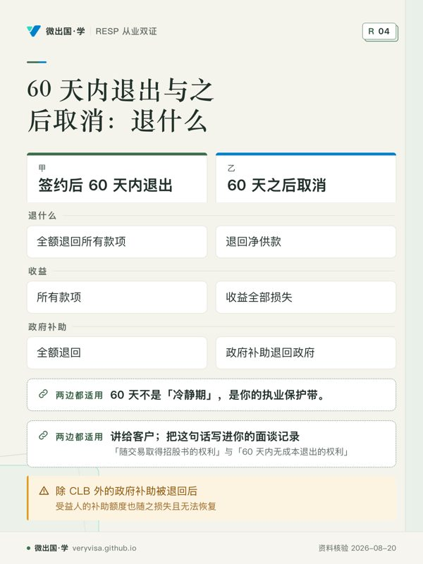
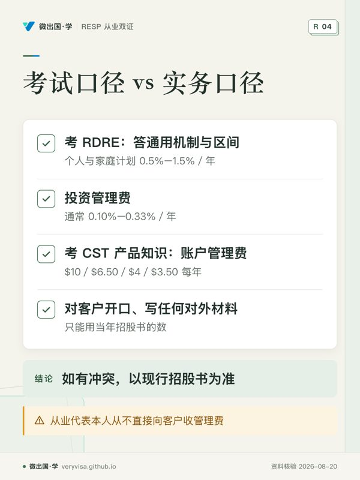

奖学金计划（Scholarship Plan）是加拿大零售投资产品里披露密度最高、费用结构最反直觉的一类。它的费用不是「每年扣一点」，而是先把销售费从最早那几笔供款里整个扣走——所以一个交了两年就退出的客户，拿回来的钱可能远少于他放进去的钱。这不是骗局，是设计；但正因为是设计，监管把披露义务压到了极限：两部分招股书、逐年更新、必须逐份交到认购人手上、外加一个 60 天无条件反悔窗口。
买前核对清单：买 RESP 前必读的两份文件与全部费用：招股书、Plan Summary、销售费退还阶梯。论坛文章按招股书与 Plan Summary 逐项列出费用、60 天撤回期、取消与转出损失，附发行机构与监管原文链接；个案以所签计划的现行招股书为准。
这一篇讲两件事：披露文件体系（RDRE 第 6 章）与费用全谱（RDRE 第 7 章 + CST 2026 招股书）。两场考试都要考，但口径不同——考 RDRE 时你答的是「机制」，考 CST 产品知识时你答的是「数字」，而对真实客户开口时你只能用当年招股书上的数字。这三层不要混。
先给一张地图：
证监会审阅 → 发出 receipt → 招股书生效（每年续期）
│
┌───────────┴───────────┐
Plan Summary Detailed Plan Disclosure
（≤4 页，平实语言） （三部分：共同特征／各计划／组织与管理）
└───────────┬───────────┘
两份都必须交给认购人（开户包里）
│
签约日 → 60 天无条件全额退出窗口
│
持续披露：年度财报（经审计）＋ MRFP ＋ IRC 年报
│
SEDAR+ 公开可查（www.sedarplus.ca）
一、原理与设计逻辑：为什么这类产品要被披露到这个程度
本节回答This section answers 招股书两部分与交付、receipt含义、四张财报与三大法规Two-part prospectus and delivery, meaning of receipt, four financial statements, and three core regulations 本章考题 1Question 1 本章考题 2Question 2
结构性错配：钱先付，价值后见
普通共同基金你今天买明天可以赎，费用按资产比例逐日计提，退出成本大致等于市场价差。集团奖学金计划不是这样：
- 你承诺的是一张十几年的供款表（contribution schedule），不是一次交易；
- 销售费（sales charge）是按单位一次性计价的，却从最早的供款里优先扣；
- 真正的回报要到孩子入学、拿到 EAP 那一刻才兑现，中间十几年没有任何可赎回的市场价格。
这三条叠在一起，意味着认购人在信息上处于最不利的位置：他签字的那天，付出的成本是确定的，得到的收益是不确定的，而退出的代价是隐藏在合同深处的。监管的回应就是把「说清楚」变成一项可执法的义务，而不是一句职业道德。
于是有了「两部分招股书」

招股书（prospectus）的法定标准是 full, true and plain disclosure of all material facts——「完整、真实、平实」。但一份七十页的详细披露文件，认购人不会读。所以 CSA 在 2013 年的奖学金计划披露现代化中，把招股书强制拆成两部分：
| 部分 | 长度 | 语言 | 作用 |
|---|---|---|---|
| Plan Summary（计划摘要） | 不超过 4 页 | 平实语言（plain language） | 把收益、风险、成本三件事讲到客户当场能懂 |
| Detailed Plan Disclosure（详细计划披露，即通称的 Prospectus） | 数十页 | 法律语言 | 三节：①同一管理人旗下所有计划的共同特征 ②每个在售计划各自的信息 ③计划、管理人、分销商、基金会的组织与管理 |
两份都必须交给认购人，而且 Plan Summary 必须是他所投资的那一个计划的那一份（一家管理人卖三个计划，就有三份 Plan Summary，不能给错）。
ℹ️
Plan Summary 是拿来「用」的，不是拿来「附」的。 考试口径的表述是：你应当在客户签字前，至少带他走一遍 Plan Summary。销售面谈中真正被监管盯的动作，是你有没有把摘要里那几件事（计划结构、投资目标、风险、EAP 资格、终止与转移条款、费用）当面讲过——而不是有没有把纸塞进信封。
receipt：一张「准许销售」的票，不是一张「品质保证书」
奖学金计划不得在任何一个尚未对其招股书发出 receipt（收据）的省或地区向公众分销。这是硬门槛：没有 receipt，你在那个省卖就是无证销售。
但 receipt 的含义被误解得非常厉害。它只说明这份招股书满足了特定的证券监管要求；它不代表监管机构背书披露内容的准确性、不代表认可这个计划的投资价值、更不代表认可管理层的能力。
同样的逻辑适用于 CRA：招股书会经 CRA 审阅并批准（因为涉及 RESP 注册资格），这同样只说明它满足了 CRA 的特定要求，不是 CRA 对这个产品的推荐。
✕
「政府批准过的」是这行最经典的销售违规话术。 考试口径要求你主动向认购人澄清：证监会与 CRA 的批准不构成对该计划的背书、推荐或担保。CST 自己的销售守则说得更直白——不得让客户以为 CST 计划受 CDIC、CRA、政府或任何证监会背书；CST 本身不是 CDIC 成员（CDIC 成员资格只开放给银行、信托公司与贷款公司）。 顺带记住招股书封面那句必印的话：No securities regulatory authority has expressed an opinion about these securities and it is an offence to claim otherwise.（声称监管机构对这些证券发表过意见，本身就是违法行为。）
持续披露：一次注册，终身报告
一份招股书在某省备案之后，该计划就成为该省的 reporting issuer（申报发行人），此后必须持续、及时、准确地向公众披露经营与财务状况——这就是 continuous disclosure system。
对奖学金计划而言，这套系统的产物是：
- 年度财务报表（须经独立审计）
- Management Report of Fund Performance（MRFP，基金业绩管理报告）——由管理人每年编制，用平实语言说明该期间计划是怎么运作的，重点是投资组合的表现与持仓变化，也含部分成本与费用信息
- Independent Review Committee（IRC，独立审查委员会）年报——至少每年向认购人报告其组成与活动
这些文件以引用方式并入招股书（incorporated by reference）：它们构成披露的一部分，但不随招股书印刷、不交给认购人，而是放在 SEDAR+ 或经销商官网供查阅。若计划投资于权益类资产，管理人还会向监管签署一份 Undertaking（承诺书），同样以引用方式并入。
四张表 + 附注：你至少要认得它们
| 报表 | 它回答什么 | 记忆锚 |
|---|---|---|
| Statement of Net Assets（净资产表） | 某一时点的财务状况 | 本质上就是资产负债表（balance sheet）；净资产 = 资产 − 负债 |
| Statement of Operations（经营表） | 一段期间的投资收益活动 | 收入含利息与已实现／未实现损益；支出含管理费、投资顾问费、受托与保管费 |
| Statement of Changes in Net Assets（净资产变动表） | 一段期间资金的流入与流出 | 流入 = 认购人存款、收到的 CESG 与其他补助、自其他计划转入；流出 = 付给认购人与学生的钱（含 EAP、退还的费用）与补助的退回 |
| Statement of Investment Portfolio（投资组合表） | 每一笔持仓的细节 | 品种描述、票息率、面值、到期日、成本、市值 |
Notes to the Financial Statements（财报附注） 是财报不可分割的一部分，通常涵盖：经营性质、重大会计政策（估值方法、收益确认）、投资（种类／账面值／市值／到期结构）、财务风险（信用、流动性、市场风险及应对）、关联方交易、以及 General Fund（一般基金）。
⚠️
净资产变动表的「流入 vs 流出」是 Learnedly 高频题。 EAP 是流出不是流入——它是付给学生的钱。收到的 CESG、认购人存款、从别的计划转入才是流入。考题常把 EAP 混进流入选项里。
多份计划开始提款时，可对照论坛的父母和祖父母分别开户后的首学期提款协调清单：逐家分清订约人、提供机构、供款返还、EAP 与学生税务记录。
General Fund 值得单独记一句：一般而言，某个 pool 到期日之后计划赚到的全部投资收益都记入 General Fund，可用于抵销部分计划费用并补充 EAP 水平。这就是集团计划里 "Group Plan Bonus" 的钱从哪来。
另外还有两份非强制的补充表，常见于附注或独立列示：
- Statement of Scholarships Paid to Qualified Students——已获付款的单位／协议数量，以及每单位支付的奖学金或 EAP 金额。它对认购人评估单位潜在价值有用，但必须提醒：过往业绩不代表未来回报，实际 EAP 受多种因素影响。
- Statement of Subscriber Contributions & Subscriber Accumulated Income——按「资格年度」（year of eligibility）分池列出在外单位数、认购人存款与累计收益。它揭示的是计划未来若干年对认购人与受益人的负债时间分布。
三部 National Instrument 撑起整套披露
| 规则 | 管什么 |
|---|---|
| NI 41-101（General Prospectus Requirements） | 招股书的表格要求，包括 Plan Summary 的强制要求。奖学金计划专用表格是 Form 41-101F3 |
| NI 81-106（Investment Fund Continuous Disclosure） | 所有投资基金（含奖学金计划）的标准化报告：财报披露、MRFP、向持有人交付披露材料、重大变更披露 |
| NI 81-107（Independent Review Committee for Investment Funds） | 公开发售的投资基金必须设 IRC 审查利益冲突事项，管理人须就冲突处理制定书面政策与程序。IRC 至少三名成员，均独立于基金及其管理人，至少每年向认购人报告 |
ℹ️
Form 41-101F3 的时间锚：奖学金计划招股书专用表格（含 Plan Summary 概念）自 2013-05-31 起正式生效（CSA 奖学金计划披露现代化 Phase 1）。本课检索未找到 2013 年之后对 41-101F3 本体的实质性修订记录，但这属于「没搜到反例」的消极证据——另有一条 2018-10 的 ASC 新闻稿标题提到 "Adopt Amendments to Improve Scholarship Plan Disclosure"，本课未打开正文核实其是否触及 41-101F3 条文。这是本篇置信最低的一条，不要当定论讲。
SEDAR+：所有人都能查
招股书、年报、财报及其他法定备案，任何人都能在 www.sedarplus.ca 免费在线获取——它是 CSA 的全国系统，市场参与者用它做备案、披露、缴费与检索。经销商官网通常也会同步挂一份。
⚠️
SEDAR 是「查文件的地方」，不是监管机构。 常见错误选项：SEDAR 监督全加拿大奖学金计划的合规／SEDAR 管理 CESG 项目／SEDAR 不对公众开放——三个都是错的。它就是一个免费公开的备案文件库。
二、费用全谱：钱从哪一笔里扣、扣给谁
本节回答This section answers 销售费先全额后半额算法、各类管理费区间、60天退费与完成险Front-end full then half sales charge calculation, management fee ranges, 60-day refund, and completion insurance 本章考题 3Question 3
2.1 销售费（Sales Charge）的收取节奏——这是全课最需要会算的一件事
并非所有奖学金计划 RESP 都收销售费；收的那些，销售费付给分销经销商，用于覆盖分销成本与支付给 dealing representative 的佣金。
计价方式有三种：按单位计（集团计划的典型）、按每笔供款的固定百分比、或固定金额。
按单位计价时，多数基金会采用的收取节奏是：
认购人最初的供款 100% 全额用于支付销售费，直到销售费付掉一半；此后每笔供款的 50% 继续用于支付销售费，直到全部付清。
若采用一次性大额供款（lump sum），销售费就从这笔钱里一次扣清。
考试口径例子（RDRE 第 7 章）：Jill 与 Phil 每月供 $150，总销售费 $1,200。前 4 个月的供款（合计 $600）全额用于销售费——这四个月计入本金的是 $0；接下来 8 个月每月拿出 $75 付销售费、$75 计入本金，直到 $1,200 付清。整整 12 个月，共供 $1,800，其中 $1,200 是费用，只有 $600 进了本金。
✕
这就是「头几年退出会亏很多」的全部原因。 不是罚款，不是违约金——是费用已经先付掉了。考试口径要求你不仅告诉客户销售费总额是多少，还要告诉他最初几笔供款会怎么被用掉。这两句话是两件事，只说前一句不算讲清楚。
2.2 考试口径 vs 2026 实务：费用双口径对照表
这是本篇最需要小心的地方。 RDRE 考试口径给的是通用区间，CST 2020 手册给的是当年的具体数字，2026 招股书给的是现行数字。三者都对，但对的是不同的问题。
（A）RDRE 考试口径（考 RDRE 用这一层）
| 费用项 | 考试口径表述 |
|---|---|
| Depository／account administration fee（存管／账户管理费） | 支付计划所用的存管与银行服务成本，通常按年记入认购人账户，金额随账户交易笔数（月供还是年供）而异 |
| Administration fee（管理费） | 计划与账户的一般管理、EAP 流程管理。可向认购人收，也可从计划投资收益中支付。集团计划通常约 0.5%／年；个人与家庭计划 0.5%–1.5%／年 |
| Investment management fee（投资管理费） | 组合专业管理，通常 0.10%–0.33%／年，直接付给受聘的组合经理 |
| Independent Review Committee fee（IRC 费用） | 委员薪酬与许可开支，从计划资产中支付 |
| Custodial／trustee fee（保管／受托费） | 资产的持有与保管，通常为资产的不足 1%，按年从组合收益中支付 |
| Other charges（其他） | NSF 支票、补发支票、资金转移等杂费，各计划不同，招股书里逐项写明 |
⚠️
RDRE 第 7 章的经典考点：「管理费通常在计划资产的 ½%–1½%／年之间」是对的；错的那个选项是「dealing representative 每年向客户收 $50 管理费」——从业代表本人从不直接向客户收管理费。
（B）CST 具体数字：2020 手册（CST 考试口径）vs 2026 招股书（实务以此为准）
| 费用项 | 2020-08 手册（2019 财年数） | 2026-01-28 招股书（2025 财年数） | 变了没 |
|---|---|---|---|
| Advantage 销售费 | $200／单位 | $200／单位，相当于该单位成本的 3.1%–24.1%（视缴费方式与入学时孩子年龄） | 单价未变，招股书新增了百分比区间披露 |
| Advantage 账户管理费（月供／年供／两年年供／单次） | $10／$6.50／$4／$3.50 每年 | $20／$13／$8／$7 每年 | 翻倍级上涨 |
| Advantage 综合管理费（All-Inclusive Management Fee） | 0.60%（Admin 0.50 + 受托保管 0.02 + 组合管理加权 0.08） | 0.59%（Admin 0.50 + 受托保管 0.01 + 组合管理加权 0.08），截至 2025-10-31 财年 | 略降 |
| Individual Plan 综合管理费 | 1.20%（Admin 1.00 + 0.05 + 0.15） | 1.15%（Admin 1.00 + 0.03 + 0.12） | 略降 |
| Family Plan 综合管理费 | 1.09%（Admin 1.00 + 0.04 + 0.05） | 1.09% | 持平（构成略变） |
| Individual／Family 销售费 | $50／计划，自首笔供款一次扣清 | $50／计划，仅为收 CLB 而开的计划免收 | 未变，免收条款要记住 |
| NSF 退票 | $15／笔 | $25／笔 | 涨 |
| 转出至其他 RESP 提供商 | $50／次 | $50／次 | 未变 |
| 补发丢失支票／止付 | $15／笔 | $20／笔 | 涨 |
| IRC 报酬 | 主席年费 $10,000；委员年费 $7,500；出席费 $1,000／次；秘书处 $35,000 | 主席 $16,000；委员 $13,000（已含 2 次会议出席费）；额外会议 $1,500／次；秘书处 $35,000。2025 财年合计 $99,756，由全部计划（含停售计划与 CST Spark Education Portfolios）分摊 | 涨 |
⚠️
考试口径 vs 实务口径的执法点在这里： - 考 RDRE：答通用机制与区间（0.5%／0.10%–0.33%／不足 1%），别套 CST 的具体数。 - 考 CST 产品知识：Learnedly 题库与 2020 手册同源，账户管理费大概率仍按 $10／$6.50／$4／$3.50 出题。 - 对客户开口、写任何对外材料：只能用当年招股书的数（现为 $20／$13／$8／$7、0.59%）。手册自己就写了：如有冲突，以现行招股书为准。
2.3 招股书那两个「体感数字」——比费率表更能让客户听懂
2026 招股书与 Plan Summary 在费用表旁边放了一个例子，值得逐字记住它的结论（自己讲时用中文复述）：
假设为一名新生儿买 1 个单位的 CST Advantage Plan，选择按月供款至到期：前 11 笔供款全部用于支付销售费，直到付掉一半；其后 21 笔供款的一半继续用于销售费。总共需要 32 个月付清销售费；在这 32 个月里，只有 34% 的供款真正投进了你的计划。
另一个必须主动说的数字，是招股书披露的取消率：
CST Advantage Plan 最近五个到期的 Beneficiary Group 中，平均有 17% 的计划在到期日之前被取消。
🔧
这两个数字是你的朋友，不是你的敌人。 一个在客户面前主动说出「前 32 个月只有三分之一进本金、历史上平均六分之一的人没撑到到期」的从业者，比一个只讲 Group Plan Bonus 的从业者，被投诉与被监管盯上的概率低一个数量级——而且成交后的存活率更高，因为你筛掉的正是那些付不起、会中途退出的客户。suitability（合适性）本来就是这么做的。
2.4 销售费退还（Refund of Sales Charges／CST Loyalty Bonus）
这是集团计划最容易讲错的一块。存在两条互不相同的退还路径：
路径一：留在 Advantage Plan 走到底 → 退 50%
条件是三条同时成立：① 交齐全部应缴供款；② 计划到达 Maturity；③ 受益人拿满四笔 EAP。 支付方式：随四笔 EAP 分四次付，每笔 EAP 退还该单位所付销售费的 12.5%。付给受益人，除非认购人指示直接付给自己。
三条附带规则要记牢：
- 退还笔数不能超过 EAP 笔数——少拿一笔 EAP 就少一笔退还；受益人完全不符合 EAP 资格，则一分钱销售费退还都拿不到。
- 退还款对认购人与受益人都不构成应税收入。
- 退还不含销售费所产生的收益（Any amounts refunded will not include Income earned on the sales charges.）。
基金会为兑现这一承诺设立了独立隔离账户（segregated account）：认购单位与供款入账时，销售费的一部分转入该账户；每两年做一次估值并向基金会报告；基金会有义务补足该账户的任何缺口。
路径二：中途转入 Individual／Family Plan → 按年限退 0–25%
| 在 Advantage Plan 中的年限 | 可退比例 |
|---|---|
| 0–3 年 | 0% |
| 3–6 年 | 5% |
| 6–9 年 | 10% |
| 9–12 年 | 15% |
| 12–15 年 | 20% |
| 15 年以上 | 25% |
退款按从账户收益中提取的 EAP 金额按比例支付，不是一笔现金退给你。
⚠️
50% 与 25% 是两条路，不是一条路的两段。 走完 Advantage 全程且四笔 EAP 拿满 = 50%；中途转出 Individual／Family = 按年限最高 25%。不能叠加。 另有两条历史与失效规则：2007 年 10 月之前购买的计划，销售费退还是 100%（老合同，仍有存量账户）；主动减少单位（reduce Units）时，被取消那些单位的销售费退还权利直接作废。
2.5 60 天：整个产品最重要的一个数字
| 时点 | 退什么 |
|---|---|
| 签约后 60 天内退出 | 全额退回所有款项，包括已付的费用与（如适用）保险费 |
| 60 天之后取消 | 退回净供款（供款减去已付的销售费与其他费用）；收益全部损失（集团计划中留给同组其他受益人）；政府补助退回政府 |
60 天之后取消，除了失去收益，还可能承担 withdrawal fee 与 depository fee（招股书逐项列明），已缴保险费也归于损失。更狠的一条在 Plan Summary 里：除 CLB 外的政府补助被退回后，受益人的 Grant Contribution Room（补助额度）也随之损失且无法恢复。
🔧
60 天不是「冷静期」，是你的执业保护带。 考试口径明确要求：你必须把「随交易取得招股书的权利」与「60 天内无成本退出的权利」两件事讲给客户，并鼓励他在 60 天结束之前读完材料。真正的合规动作是——把这句话写进你的面谈记录。它日后是你唯一能证明自己讲过的东西。
2.6 Completion Insurance（供款完成保险）
许多计划提供一种保险：在认购人身故或失能时，代其完成计划下的剩余供款。有的计划里它是可选项，有的是内置功能。可选保单的保费视合同规模与被保险人情况而定。
两个细节：60 天内退出，保险费也全额退；60 天后终止，已缴保险费一并损失。
⚠️
Completion insurance 保的是认购人（出钱的那个人）的身故／失能，不是受益人的命，也不是「孩子没读完大学就赔钱」。这是 RDRE 第 7 章的送分题，也是最常被答反的一题。
三、现实案例：同一套规则，四个人的不同结局
本节回答This section answers 60天内反悔、中途失业断供替代方案、少读年限与政府批准话术Withdrawal within 60 days, alternatives for mid-stream contribution disruption, shortened study duration, and government approval sales pitch prohibitions 本章考题 4Question 4
案例一：签约第 45 天反悔的客户。 他交了两笔月供。60 天窗口内退出——所有钱全额退回，包括已扣的销售费。你要做的只是当场把退出流程走完，不要劝阻、不要拖到第 61 天。任何以拖延手段消耗客户 60 天窗口的行为，都是可被直接立案的违规。
案例二：交了 30 个月，家里失业，想退出。 按招股书的例子推算：这 30 个月里，前 11 笔全额、其后 19 笔各一半用于销售费——本金里累积的钱远少于他交进去的总额。此时取消是最差的选项。考试口径与招股书都给了替代路径：减少或暂停供款、转入 Individual／Family Plan、或转到其他提供商的 RESP（各有限制与费用）。其中转入 Individual／Family Plan 是全额转、无手续费的，且视年限还可能拿回 0–25% 的销售费。你的义务是把这几条路都摆出来，而不是等他说「那就退了吧」。
案例三：孩子只读了两年就工作了。 Advantage Plan 下，四笔 EAP 只拿到两笔 → 销售费退还也只拿两笔，共 25%（12.5% × 2），另外两笔永久失去。若当初在孩子 20 岁那年之前转入 Individual／Family Plan，规则完全不同——那两个计划允许在13 周全日制学习之后就把全部收益与补助取出。这就是为什么招股书明确写着：若你认为孩子可能只读三年或更短，应当考虑转入 Individual 或 Family Plan。
案例四：客户问「这个计划政府批准了吗？」 唯一正确的回答结构是两句：① 是的，证监会已对招股书发出 receipt，CRA 也已审阅批准，否则我们不能在本省销售；② 但这两件事都只表示满足了特定监管要求，不表示任何政府机构推荐、认可或担保这个产品的价值。 少说第二句，就是违规。
四、历史变迁：这套披露体系是怎么长成现在这样的
本节回答This section answers 纳入省证监会监管的由来与2013年披露现代化Origins of provincial securities commission oversight and the 2013 disclosure modernization
| 时间 | 变动 | 影响 |
|---|---|---|
| 1967→1972 | CST 创始人之一 Peter Wright 致函各省检察长，指出十余家同业可能未为未来管理保留足够准备金；结果是奖学金信托计划被纳入各省证券监管 | 这个行业「归省证监会直管」的源头，就是行业内部举报出来的 |
| 2013-05-31 | CSA 奖学金计划披露现代化 Phase 1 生效，Form 41-101F3 与 Plan Summary 制度确立 | 招股书从此强制两部分、摘要不超过 4 页、必须平实语言 |
| 2018-06-15 | 魁北克 Superior Court 受理针对在魁运营的全部注册奖学金计划经销商（含 CSTS 与基金会）的诉讼，争点是 2013-07-19 以来向魁省客户收取的销售费金额；2021-03-31 获准作为集体诉讼推进 | 见 CST 产品线那一篇；此处只提示：销售费的合法性本身正在被法庭审查 |
| 2025-10-31 财年 | CST Advantage 综合管理费 0.59%；账户管理费为 $20／$13／$8／$7 | 与 2020 手册数字已明显不同，见 §2.2 |
ℹ️
TCR（Total Cost Reporting，总成本报告）是一个正在逼近但本课未彻底核实的变化。 已知：CSA／CCIR／CISRO／CIRO 联合的 TCR 增强规则把 scholarship plans 与共同基金、ETF、分红基金合同一并纳入，自 2026-01-01 起的持仓按新规出年度成本报告（百分比 + 实付加元双口径），投资者将于 2027 年初首次看到新版年报。 但本课的依据是律所转述与 CIRO 页面标题，未逐句核对监管原文，置信为「中」。 在考场上不要用它答题（考试口径成文于 2024-02，未必细化到 SPD 操作层）；在客户面前也不要说成已生效的确定安排。要用它之前，先去抓 CSA／CIRO 联合公告原文。
五、边学边测
1. 以下关于奖学金计划招股书的说法，哪一项不成立？ (a) 它是奖学金计划最重要的披露文件 (b) 它每月根据计划投资表现更新 (c) 必须交给每一位认购人 (d) 它提供认购人做出知情决策所需的全部信息 → (b)。招股书通常每年续期，销售时必须交付当时生效的那一版，不存在按月更新。
2. 证监会是如何处理招股书的？ (a) 由证监会撰写 (b) 备案即受理、不作审阅 (c) 证监会背书其为审慎投资 (d) 证监会审阅后，如认为适当则发出 receipt，招股书方可生效 → (d)。receipt 是准许分销的前提，不是品质背书。
3. 关于净资产表（Statement of Net Assets），以下哪项不成立？ (a) 本质上是计划的资产负债表 (b) 每月寄给认购人 (c) 显示某一时点的财务状况 (d) 显示资产与负债之差 → (b)。认购人收到的是至少每 12 个月一次的账户结单，不是计划的月度财报。
4. 净资产变动表中，以下哪一项不是流入？ (a) EAP (b) 收到的 CESG (c) 认购人存款 (d) 自其他计划转入的金额 → (a)。EAP 是付给学生的钱，属流出。
5. 关于 SEDAR+，以下哪项成立？ (a) 它监督全加拿大奖学金计划的合规 (b) 它管理 CESG 项目 (c) 它提供奖学金计划披露文件的免费在线查阅 (d) 它不对公众开放 → (c)。
6. 关于销售费退还，以下哪项成立？ (a) 只有两天内改主意才能全额退 (b) 60 天内改主意可全额退 (c) 30 天内改主意退一半 (d) 销售费一律不退 → (b)。
7. 关于管理费（administration fee），以下哪项不成立？ (a) 通常在计划资产的 ½%–1½%／年之间 (b) 覆盖奖学金计划的一般管理成本 (c) 从业代表每年向客户收取 $50 管理费 (d) 可能作为额外费用向客户收取，也可能从计划收益中支付 → (c)。
8. 什么是 completion insurance？ (a) 保受益人性命直至完成学业 (b) 孩子没拿到学位就赔付 (c) 定期与终身险的组合包 (d) 在认购人身故或失能时代其缴付 RESP 供款的保险 → (d)。
9.（计算） 客户为 3 岁孩子按月供 $300，选「monthly for 10 years」，单位价 $13.75。购得 21.818 单位，销售费按 $200／单位计 = $4,363.60。按「先全额、后半额」规则：前一半 $2,181.80 ÷ $300 ≈ 7.3 → 约 7 个月；后一半 $2,181.80 ÷ $150 ≈ 14.5 → 约 15 个月；合计约 22 个月付清。 → 这道题的形态（单位数 → 销售费 → 两段付清时长）是 CST 产品考试的必考套路。
六、核心术语双语表
| 中文 | English | 说明 |
|---|---|---|
| 招股书 | Prospectus | 法定标准：full, true and plain disclosure of all material facts |
| 详细计划披露 | Detailed Plan Disclosure | 招股书第二部分的正式名称，分共同特征／各计划／组织管理三节 |
| 计划摘要 | Plan Summary | 不超过 4 页、平实语言；每个在售计划各一份，必须交付 |
| 收据（准售批文） | Receipt | 无 receipt 不得在该省分销；不是背书 |
| 以引用方式并入 | Incorporated by reference | 构成披露一部分但不随招股书交付（财报、MRFP、IRC 年报、Undertaking） |
| 申报发行人 | Reporting Issuer | 备案招股书后取得的地位，触发持续披露义务 |
| 持续披露 | Continuous Disclosure | NI 81-106 规范 |
| 基金业绩管理报告 | Management Report of Fund Performance (MRFP) | 管理人年度编制，平实语言说明运作与持仓 |
| 独立审查委员会 | Independent Review Committee (IRC) | NI 81-107；至少 3 名独立成员；每年向认购人报告 |
| 净资产表 | Statement of Net Assets | 计划的资产负债表 |
| 经营表 | Statement of Operations | 期间投资收益活动 |
| 净资产变动表 | Statement of Changes in Net Assets | 期间资金流入流出 |
| 投资组合表 | Statement of Investment Portfolio | 逐笔持仓明细 |
| 一般基金 | General Fund | 到期后收益入此账户，可抵费用并补充 EAP |
| 销售费 | Sales Charge | 付给分销经销商，覆盖分销成本与代表佣金 |
| 账户管理费 | Account Maintenance Fee | CST 口径下付给基金会，按供款频率定额 |
| 综合管理费 | All-Inclusive Management Fee | Admin + 受托保管 + 组合管理三段合计 |
| 销售费退还／忠诚奖金 | Refund of Sales Charges / Loyalty Bonus | 全程 50%（每 EAP 12.5%）／中途转出 0–25% |
| 隔离账户 | Segregated Account | 为兑现退还承诺设立，每两年估值，基金会补缺口 |
| 供款完成保险 | Completion Insurance | 保认购人身故／失能 |
| 补助额度 | Grant Contribution Room | 补助退回后损失且不可恢复（CLB 除外） |
| 总成本报告 | Total Cost Reporting (TCR) | 2026-01-01 起适用，2027 年初首见；本课置信中 |
七、来源清单
考试口径层
- RESPDAC 从业代表资格课程考试的现行版培训材料，© 2024-02，第 6 章 Scholarship Plan Disclosure Documents（招股书两部分、receipt、持续披露、四张财报、NI 41-101／81-106／81-107、SEDAR+）
- 同上，第 7 章 Fees and Expenses（销售费收取节奏与 Jill/Phil 例、60 天退还、completion insurance、withdrawal fee、五类管理与运营费用区间）
- CST《Product and Resource Manual》2020-08，第 5 章 CST Plans Structure（$200／单位、账户管理费 $10/$6.50/$4/$3.50、2019 年综合管理费 0.60%／1.20%／1.09%、NSF $15、转出 $50、SCR 50% 与 0–25% 阶梯、2007-10 前 100%）
现行层（实务以此为准）
- CST《Detailed Plan Disclosure / Prospectus》2026-01-28（三计划在售与最低认购；Advantage 费用表 $200/单位、3.1%–24.1%、账户管理费 $20/$13/$8/$7；2025 财年综合管理费 0.59% = 0.50 + 0.01 + 0.08；Individual 1.15%、Family 1.09%；交易费 NSF $25／转出 $50／补票 $20；IRC 报酬与 2025 财年 $99,756；Refund of Sales Charges 全文与 0–25% 表；60 天权利；32 个月／34% 例）
- CST《Plan Summary》2026-01-28（4 页摘要实物；五类损失风险；最近五个到期组平均 17% 取消率）
- CST《RDI and COI Disclosure Document》2026（Individual 1.15%／Family 1.09% 的 2025-10-31 财年数据；转出与处理费口径）
监管与研究层
research/行业与监管格局核实_2026-08-20.md§七（Form 41-101F3 自 2013-05-31 生效；2013 后无修订为消极证据，2018-10 ASC 新闻稿未核实——置信低）knowledge/units.jsonl（考试口径版本裁决：CST 产品细节一律以 2026 招股书为准）、（TCR，置信中，用前须升级）
本篇最可能出错的地方（请重点复核）：① 41-101F3 在 2013 年之后是否另有修订——2018-10 那条 ASC 公告未开正文；② TCR 对 SPD 的具体落地形态未核监管原文；③ CST 2020 手册与 2026 招股书之间的中间年份（2021–2024）费率无对照，本篇只做了两端对比，不能推断中间年份的数值；④ 考试口径通用区间（如管理费 0.5%–1.5%）与 CST 实际值（Individual 1.15%）恰好落在同一区间内，容易让人误以为两者是同一口径——它们不是，一个是全行业区间，一个是单一产品的年度实测值。
放到真实家庭里
披露文件和费用在家庭那一侧，是签字前该问的几个问题、以及 60 天内还能无条件退出。
读完了：用考题把这一章过一遍
按这个顺序做，十五分钟：先看怎么考，再看陷阱，用思维导图默写一遍骨架，最后做 7 道带逐项解析的练习；错的题自动进间隔复习。
听、看、翻：披露文件与费用全谱
本页知识卡
不看正文也能拿到这一节的核心内容：先看导读，再看图。点图放大，左右翻页。

- 先看先对照两列同一行，别把「全额」与「净供款」当成同一口径。
- 易漏图外还有 withdrawal fee、depository fee，已缴保险费也归于损失。
- 下一步去讲解核对当年招股书；再把面谈记录带给从业代表。

- 先看先按使用场景分层，不要把考试作答和客户沟通混成一套数字。
- 易漏旧题来源和当年披露可能不同；对外使用前回到现行招股书复核。
- 下一步去练习把题目按场景归类，再把实际客户数字交给持牌专业人士核对。